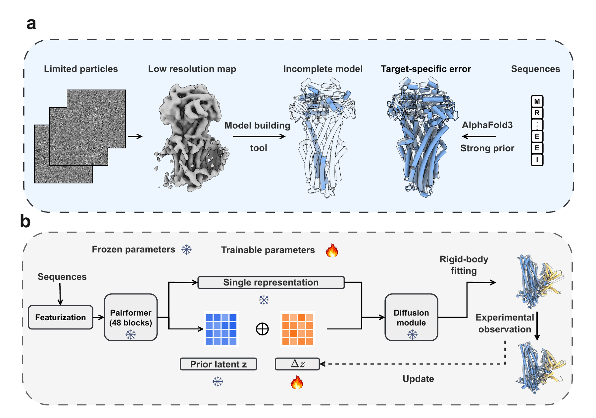
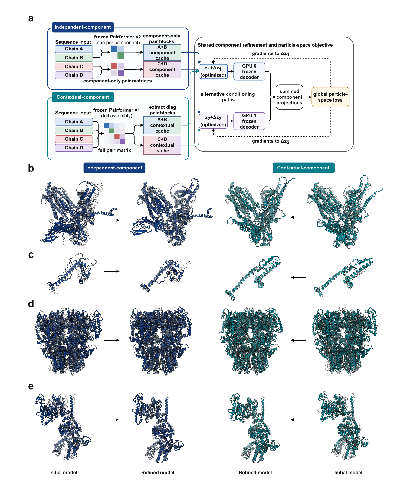

Frozen diffusion prior
Refine the target-specific latent representation without fine-tuning the pretrained network.
COMPUTATIONAL STRUCTURAL BIOLOGY
LangTaoSha Preprint Server · 2026
A frozen structural prior, guided by experimental particles.
CoCoFold2 connects a frozen Protenix-v1 diffusion prior to cryo-EM particle observations. It optimizes a target-specific latent perturbation while keeping network weights fixed.

Refine the target-specific latent representation without fine-tuning the pretrained network.
Use upstream particle poses and CTF estimates to connect structures to experimental images.
Distribute component caches across GPUs using Independent or Contextual conditioning.
Component-parallel refinement supports structural refinement across multiple GPUs. The preprint presents Independent and Contextual conditioning strategies and structural examples for MSP-1 and TRPM8.

CoCoFold2 requires a sufficiently accurate initial prior and informative experimental observations. Particle poses and CTF parameters are supplied upstream; CoCoFold2 does not estimate them.
Start with a small example, then adapt the workflow to your data. The user guide includes input preparation, parameters, saved outputs and restart instructions.
If you use CoCoFold2, please cite the preprint:
@article{liao2026cocofold2,
title = {CoCoFold2: scalable latent refinement of diffusion-based protein structure predictions from limited-particle cryo-EM data},
author = {Liao, Junwen and Hu, Mingxu and Bao, Chenglong},
journal = {LangTaoSha Preprint Server},
year = {2026},
doi = {10.65215/LTSpreprints.2026.09.15.000338},
url = {https://doi.org/10.65215/LTSpreprints.2026.09.15.000338}
}